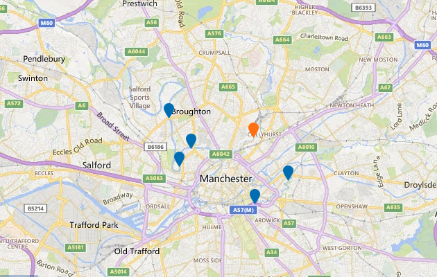

Latest river level information for Irk at Collyhurst Weir
9:30am on Wednesday 11 January 2017
No forecast data available
What effect could these levels have on nearby areas?
The normal range at this location is 0.05m to 1.10m.
The latest level recorded is 0.90m at 9.00am on Wednesday 11 Jan 2017.
Above 1.10m flooding of low-lying land may occur in these areas
Above 1.50m some property flooding may occur in these areas
View a nearby measuring station
Select a marker on the map to view measuring station.

![]()
How might river levels affect flood risk?
How are river levels measured?
How are forecast levels produced?
Your feedback will help us improve this service.